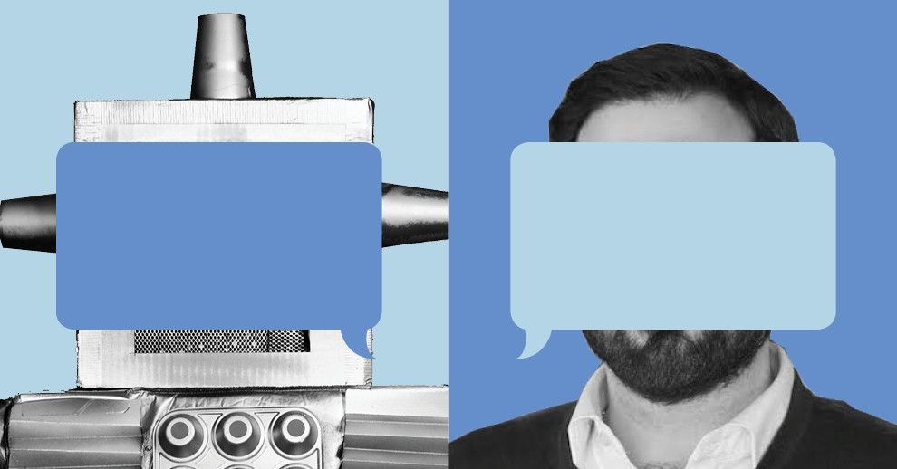

Journal 6
Allison Parrish's The Ephemerides, poems from a bot and pictures from space

What is it even
The Ephemerides is a Twitter bot made by poet and programmer Allison Parrish in 2015. Each post pairs a randomly chosen image from an outer planet space probe, taken from NASA's database, with a short poem generated by the computer. The images are raw, straight from the probe, before anyone has cleaned up the glitches or turned them into the polished colour photos we usually see. The poems are strange and slightly broken, sentences that almost make sense and then drift somewhere else.
Neither the image nor the poem was made for the other, yet together they start to feel like they belong.
Why does it even work
What I like is how quiet it is. Neither the image nor the poem was made for the other, yet together they start to feel like they belong. A blurry, grey view of Saturn next to a line of odd text reads almost like a message sent back from very far away. I think a lot of that meaning comes from me, the same way Steyerl described finding patterns in noise. The bot does not intend anything, but I still end up reading something into it. It also connects to what I am learning in Python. A bot like this is not huge or complicated: a bit of code that picks an image, puts some words together and posts them on a schedule. It is a reminder that something small and simple can still feel poetic, and that the messy, unedited version of data can sometimes be more interesting than the clean one.